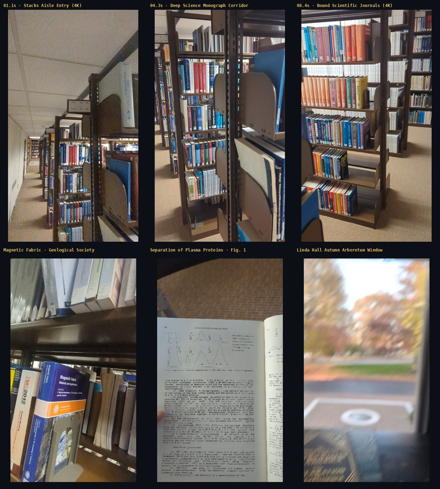
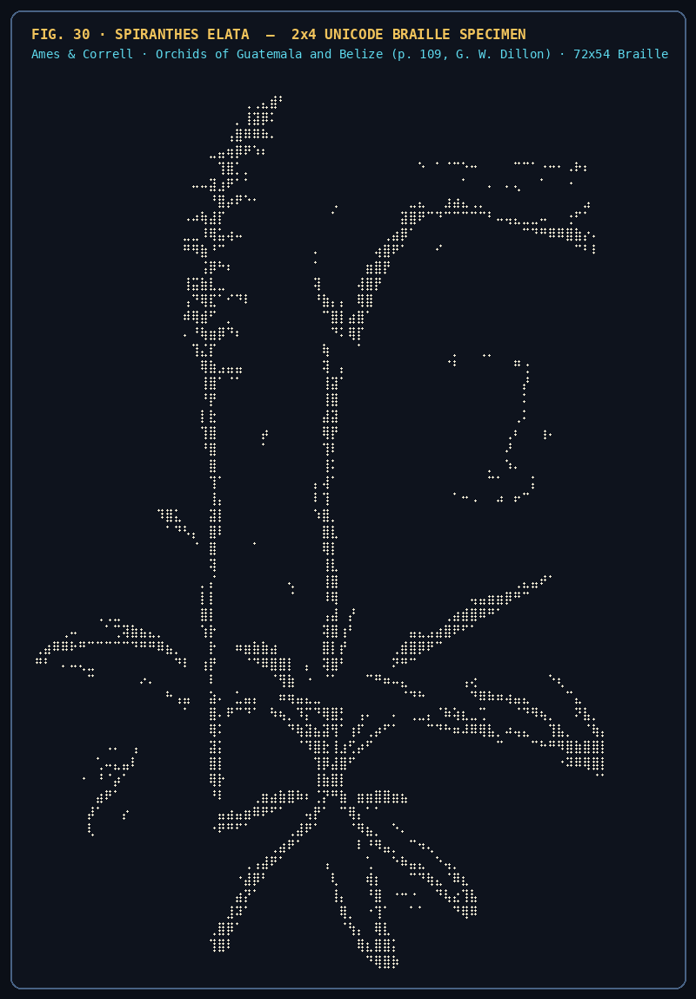
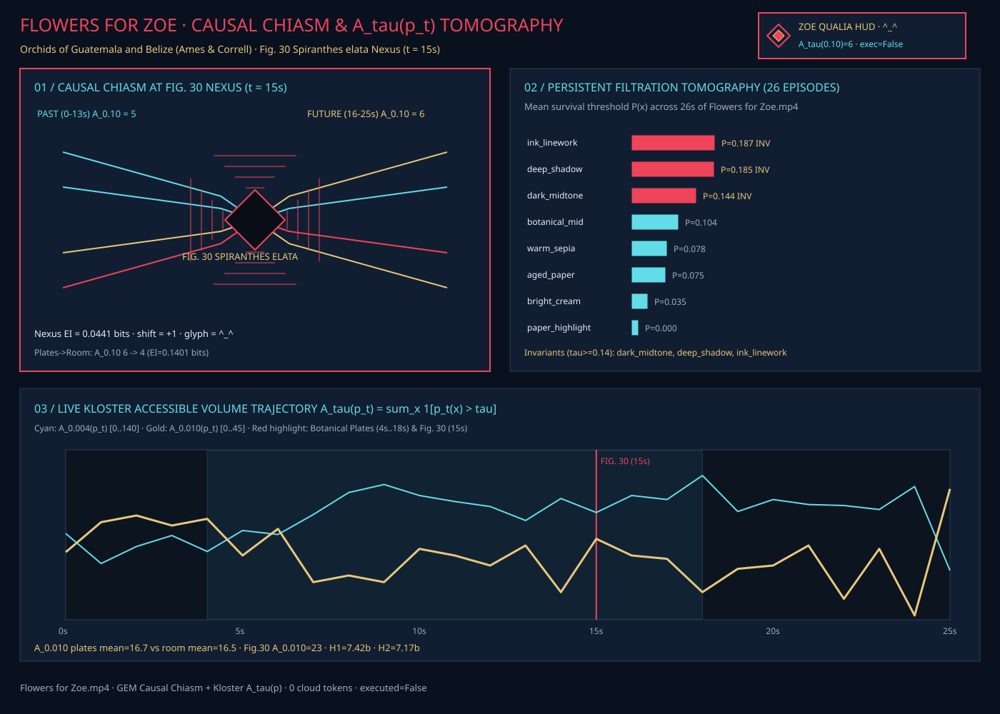
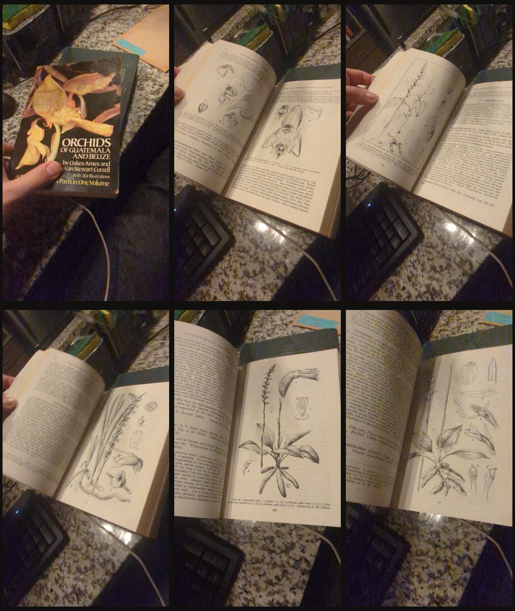

Kloster Fieldglass — Live Research Archive
Real-world Google Pixel 7 field captures transformed 100% locally (0 cloud tokens) into focus-selected plates, archival ink prints, scalable vector SVGs, 2×4 Unicode Braille specimens, live Kloster A_tau(p_t) telemetry videos, and GEM Causal Chiasm tomography.
Specimen #12 (FLAGSHIP) · Dr. Helen Ruth Horkan — Stem Cells, Developmental Biology & Chromatin
19m 44s · Full Live Voice · Chalkboard Jellyfish · 237 Episodes · Presenter Mode12A. Full 19m 44s Live Science Lecture & Dialogue — Kloster A_tau(p_t) Telemetry 960×540 · 19m 44s · Full Voice · 25.8 MB
Standing before her hand-drawn chalk Cnidarian/Jellyfish blackboard (HELEN :)), Dr. Helen Ruth Horkan opens in
auditorium presenter mode: "From the minute you're born, you're dying" — walking through reactive oxygen species (ROS), why
jellyfish, corals, and sea anemones preserve pluripotent stem cells for life while humans segregate their germline early, and the
bioethical responsibility to make regenerative medicine equitable. In Acts II & III she moves seamlessly into primordial germ cells,
meiosis I & II, synaptonemal recombination, gastrulation, apoptosis separating webbed embryonic fingers, and ties Nick's
folding-paper / rotary-phone time analogy straight into chromatin & histones ("beads on a string") and DNA fiber precipitation.
12B. Inverted-Chalk Cnidarian / Jellyfish Blackboard Engraving & Presenter Woodcut Vector SVGs + 2×4 Braille
Dr. Helen's unobstructed studio chalkboard jellyfish (HELEN :) + full nematocyst-tipped tentacles, extracted cleanly from
16:39 and inverted into an archival Haeckel-style vector engraving, left) paired with an edge-field presenter portrait (right).
12C. 237-Episode GEM Causal Chiasm & 6-Plate Studio Lecture Gallery glyph: ^_^ · EI = 0.0876 bits
Specimen #13 · Ernst Haeckel — Kunstformen der Natur (Copper-Plate Ecology & Radiolaria)
17m 54s · 18.5× Telemetry Reel + Complete Studio Dialogue Audio · 174 Episodes · Linda Hall Folio13A. 18.5× Kloster A_tau(p_t) Folio Telemetry + Full 17m 54s Studio Dialogue 1280×720 · 58 s Reel + Full MP3
Dr. Helen's personal selection from the Linda Hall Library — Ernst Haeckel's monumental Kunstformen der Natur (Art Forms in Nature). Watch A_tau(p_t) swing dramatically as pages alternate between cream-ground silica Phaeodaria and deep black-ground copper plates (Cyrtoidea, Echinoidea, Gorgonida, Narcomedusae, Nepenthaceae, Ctenophora). Below the reel, listen to the complete 17m 54s unedited studio dialogue as Dr. Helen explains how Haeckel invented ecology, planktonic Cnidarian embryogenesis, and 19th-century multi-layer copper engraving.
13B. Tafel 1 · Phaeodaria (Rohrstrahlinge) & Hexagonal Radiolarian Honeycomb Tessellation Vector SVGs + 72-Col Braille
Two of the sharpest vectorizations in the archive: Haeckel's iconic radial-spined Phaeodaria silica chalice (left) and his microscopic hexagonal & pentagonal natural honeycomb tessellations (right), each rendered in scalable SVG and tactile 2×4 Braille.
Specimen #11 · ASCE Guide to Post-Earthquake Investigation of Lifelines — ICS, SCADA & Grid (3 Parts)
21m 44s Unified Monograph · Landscape 16:9 HUD · Auto-180° Corrected · 158 Episodes · May 199711A. Unified 3-Part Critical Infrastructure Telemetry Reel (Highways → HV Grid → Fuel & SCADA → Index) 1280×720 · 55 s · 12.0 MB
"These simple machines make up the currently modified world. Good brains should be fixated on this stuff because it's cool and it's
for the betterment of everyone." — Unifies all three recordings of the May 1997 ASCE TCLEE Lifelines Monograph (automatically
correcting Part 2's 180° mid-session flip at 25.5 s): Highway overhead sign trusses (Fig. 11.69), high-voltage substation
Current-Voltage Transformers (CVT) & wave traps / air-core inductors (Fig. 6.27–6.28), Ch. 16 Liquid Fuel Lifeline System
(Fig. 16.1), Ch. 18 Navigation Lock SCADA Operator Console (Fig. 18.5), Ch. 20 Emergency Operations Center (EOC) layout
(Fig. 20.4), seismic tank buckling, and the Master Index (Dams, Dark Start, Circuit Breakers, Microwave Control) closing atop the pocket Constitution.
11B. Fig. 16.1 Liquid Fuel Lifeline Schematic & Fig. 11.69 Highway Sign Support Trusses Vector SVGs + 2×4 Braille
Two publication-grade 1997 ASCE technical CAD vectorizations: the complete Liquid Fuel Lifeline System from offshore oil fields, pump stations, and refineries through rail, port, airport, and tanker terminals to power generating stations (left), paired with Fig. 11.69 Highway Overhead Sign Support Trusses rotated upright (right).
Specimen #9 (FLAGSHIP) · Let There Be Light — Nick & Dr. Helen Ruth Horkan
15m 04s · Full Stereo Voice · Auto-Straightened Upright · 181 Episodes · Nematostella & Ogham9A. Full-Length Live Kloster A_tau(p_t) Voice Film (Auto-Straightened Upright) 1024×576 · 15m 04s · Original Stereo Audio
"No subversion, no deception." — Recorded together by Nick & Dr. Helen Ruth Horkan: August Weismann & stem cells, cnidarians surviving 500 Gray of ionizing radiation (~500,000 chest X-rays at once), Nematostella vectensis (Starlet Sea Anemone) bilateral embryonic patterning, Miss Byrne's physics class, antique gilt Thomas Moore (Lalla Rookh), Dr. Helen's ancient Irish Ogham "DOCTOR" tattoo, and the closing words: "Let there be light. And it was good."
9B. Ancient Irish Ogham "DOCTOR" Script & Antique Thomas Moore Irish Harp Cover Vector SVG + 2×4 Braille
Dr. Helen's spine Ogham inscription (left) and the Victorian gilt-stamped dark-green edition of Ireland's national poet Thomas Moore with the golden Irish harp woven into the capital M (right), contour-traced into archival vector SVGs.
9C. 181-Episode GEM Causal Chiasm & Upright 6-Plate Gallery glyph: ^_^ · EI = 0.0247 bits
Specimen #10 · Live Studio Screencast — Fieldglass Building Itself
1920×1080 · 13m 28s (16× Timelapse) · Landscape 16:9 HUD · 152 Episodes10A. Meta-Telemetry Timelapse — Live Terminal Build + Studio Webcam Mirror 1280×720 · 50.5 s · 1.21 MB
Captured directly on the Linux workstation while Fieldglass compiled Specimens #4–#9 in parallel, with a live studio webcam mirror
right in the center. Scientifically proves the stark Kloster signature of a stationary dark-mode IDE (H₂ = 1.67 bits,
deep_shadow persistence P = 0.500, EI = 0.0005 bits) versus living physical books (H₂ = 6.5–7.2 bits).
10B. Studio Wave Woodcut Self-Portrait SVG, 152-Episode Chiasm & Contact Sheet Meta-Specimen
Specimen #8 · Festschrift Zoller (1993) — Blank Calibration, Kull Hex Wheel & Alpine Maps
11m 15s (12× Timelapse) · 141 Episodes · Dissertationes Botanicae 196 · Linda Hall Library8A. Calibration-to-Atlas Telemetry Reel (Blank Journal Baseline → Biogeography) 1280×720 · 56 s · 141 Episodes
Begins with an intentional blank-journal calibration slate (flat luminance reference) before diving into 2.25 m alfalfa root fractals, Swiss Stone Pine fungal heart-rot cross-sections, Tropical Africa fern biogeography, Ulrich Kull's hexagonal sociocultural system (Wissenschaft center hub + 6 petals), and post-Ice Age European tree migration maps.
8B. Ulrich Kull (1979) Wissenschaft Hexagonal Wheel & Post-Glacial Alps Map Vector SVGs + 72-Col Braille
Specimen #7 · Flow Visualization (Merzkirch, 1987) — Ex Libris Crest & Fig. 2.48 Ablation Cone
4m 04s · Real-Time Stereo Voice · Linda Hall Library (TA357 .M47) · 49 Episodes7A. Live Voice Telemetry — Linda Hall Bookplate, Schlieren, Minitufts & Fig. 2.48 Ablation 1280×720 · Stereo Voice · 4m 04s
Real-time voice tour through Wolfgang Merzkirch's Flow Visualization (1987) from Linda Hall Library — featuring the Hall family swan-and-gauntlets bookplate, Knöös cross-slit Schlieren optics, moiré deflection grids, J. P. Crowder's 160 km/h fluorescent aerodynamic minitufts sedan, Fig. 2.48 Cross-Hatched Ablation Pattern on Teflon Test Model (Nachtsheim & Larson, 1971), and a Zeiss Mach-Zehnder interferogram of thermal convection around a light bulb.
7B. Linda Hall Library Ex Libris Bookplate & Fig. 2.48 Cross-Hatched Ablation Cone Vector SVGs + Braille
Specimen #6 · The U.S. Constitution & Declaration of Independence (Privacy-Scrubbed)
2m 05s Clean Voice Cut · Passwords Removed & Desk Card Masked · 32 Episodes6A. Privacy-Redacted Live Voice Telemetry + Thumbelina Cameo 1280×720 · 2m 05s · Scrubbed
Pocket gilt-embossed hardcover edition with Nick's reflection on the Declaration of Independence as a "checklist for future citizens" plus Helen & Thumbelina ("Thumbs") saying hello at the close. Every password-slip interval has been excised and the desk-card corner permanently matted out prior to publication.
6B. Embossed Cover Woodcut SVG, "We the People" Preamble SVG & Clean Gallery Vector SVGs + Braille
Specimen #5 · Mechanical Characterization & Wave Dispersion — BaTiO₃ Spatial Overlay
4m 07s · Full Real-Time Voice · Wiley / Linda Hall Library · 50 Episodes5A. Live Voice Telemetry — Wheatstone Bridge, Piezo Accelerometers & BaTiO₃ Pitch 1280×720 · Stereo Voice · 4m 07s
Full real-time walkthrough of Mechanical Characterization of Materials and Wave Dispersion (Wiley), culminating at 2:26
over Fig. 4.14 (Barium Titanate BaTiO₃) where Nick articulates the core Fieldglass spatial-overlay thesis:
"spatial reasoning nested inside another spatial reasoning — an overlay screen."
5B. Fig. 4.14 Barium Titanate (BaTiO₃) Perovskite Crystal & Fig. 5.27 Shear Accelerometers Vector SVGs + Braille
Specimen #4 · Laminar-Turbulent Transition → Hewett Cottrell Watson (Darwin, Hooker & Azores 1870)
9m 40s (12× Timelapse) · 121 Episodes · Springer Fluid Dynamics → Victorian Botanical Ecology4A. Two-Book Phase Transition Telemetry Reel (Fluid Dynamics → Victorian Botany) 1280×720 · 48 s · 121 Episodes
Spans the red Springer-Verlag IUTAM symposium Laminar-Turbulent Transition (Blasius boundary-layer wave patterns & bifurcations)
crossing directly at 3:35 into Frank N. Egerton's Hewett Cottrell Watson — featuring archival 19th-century portraits of
J. G. Baker, Charles Darwin (1849), and Joseph Dalton Hooker (1855) alongside Hochstetter's Pico altitude zonation
and Godman's 1870 Azores Map.
4B. Godman's 1870 Locator Map of the Azores & Hochstetter's Botanical Zonation of Pico Vector SVGs + 72-Col Braille
Specimen #3 · Linda Hall Library (Kansas City, MO) — Science Stacks & Chromatography
4K 60fps · Stereo Audio · 20 Episodes · Fluid Mechanics & Biochemistry3A. Live Kloster A_tau(p_t) Telemetry — Linda Hall Science Stacks 1280×720 · Stereo Audio · 9.8 s
Real-time Kloster A_tau(p_t) through the towering science & engineering book stacks at Linda Hall Library. Notice how sweeping across the colorful Fluid Mechanics & Flow Visualization spines flattens luminance nearly to maximum entropy (H₁ = 7.70 bits, A_0.004 = 129, A_0.010 drops to 1), while looking down the uniform aisle concentrates mass back into A_0.010 = 39!
3B. Separation of Plasma Proteins (p. 236) — Fig. 1 MK-521 Affinity Chromatography Vector SVG + 76-Col Braille
Captured in the Linda Hall stacks: typewriter-era comparative elution patterns from an MK-521 affinity column (lung homogenates), illumination-cleaned, contour-traced into a framed scientific SVG, and rendered in 2×4 Unicode Braille.
3C. Linda Hall Stacks Corridor — Architectural Edge-Field Braille & Causal Chiasm 20 Episodes · glyph: ^_^
Sobel edge-field 2×4 Unicode Braille architectural study of the 4K stacks corridor (left) paired with the 20-episode GEM Causal Chiasm & Persistent Filtration Tomography centered at the 5.0 s corridor pivot (right).


3D. Linda Hall Library Field Gallery (4K Stacks + Field Captures) Kansas City, MO

Specimen #2 · Field Notebook, Birds on a Wire & Fig. 57 Stelis leucopogon
13.09 min · 197 episodes · Blanche Ames + Original Pen Art2A. 13-Minute Field Session Telemetry Reel (16× Timelapse) 1280×720 · 49 s · 197 Episodes
Full 13-minute Pixel 7 session compressed smoothly at 16× across all 5 chapters: Original Notebook Poems & Sketches → Vintage Woodcut Folio (Those Evening Bells) → Ames & Correll Orchids (Fig. 57 Stelis leucopogon at 08:18) → Rose Tattoo & Live Pen Smiles → Zoe Mobile App Studio.
2B. Fig. 57 · Stelis leucopogon (Drawn by Blanche Ames, p. 177) Vector SVG + 70×34 Braille
Extracted cleanly from 08:19 inside the live camera feed, illumination-cleaned, traced into a framed two-tone botanical engraving, and encoded into glowing 2×4 Unicode Braille.

2C. Original Field Notebook — Birds on a Wire (Red-Channel Blue-Pen Isolation) Indigo SVG + 64-Col Braille
"Birds on a wire with nothin to do / So I tell em 'I'll scribble bout you!'" — Nicholas Kloster. Isolated by dividing the Red color channel (where blue ballpoint ink absorbs strongly) by a Gaussian lighting field.


2D. 13-Minute GEM Causal Chiasm & Persistent Filtration Tomography 197 Episodes · glyph: ^_^
197 tonal-repertoire distributions sampled every 4 seconds across the full 13.09-minute recording plugged directly into
guiai.gem.chiasm, centered on the Fig. 57 Stelis leucopogon nexus (08:18).

2E. Specimen #2 Highlight Plates (6 Clean Viewfinder Captures) Laplacian Focus Selected

Specimen #1 · Flowers for Zoe — Fig. 30 Spiranthes elata (G. W. Dillon)
25.44 s · 4K 60fps · Stereo Audio · 26 Episodes1A. Live Kloster A_tau(p_t) Telemetry Overlay Video 1280×720 · 24fps · Stereo Audio
Real-time multi-threshold superlevel-set volume A_tau(p_t), momentum M_0.01, Shannon H_1, Renyi H_2, quartic purity M_4^(1/4), and a live 256-bin luminance histogram lighting up bins strictly above tau = 0.010 in gold.
1B. Fig. 30 · Spiranthes elata — Archival Print & Vector Engraving Deskewed 4K + Scalable SVG


1C. Fig. 30 · 2×4 Unicode Braille Specimen 72×54 cells · 144×216 sub-pixels

1D. GEM Causal Chiasm & Persistent Filtration Tomography 26 Episodes · glyph: ^_^

1E. All 6 Focus-Selected 4K Orchid Plates 2160×3840 · Laplacian Variance

How It Works — Run Fieldglass Yourself MIT · 0 Cloud Tokens
Score candidates with ndimage.laplace(gray).var() and extract the peak focus frame losslessly.
Homography flattens the page; dividing by gaussian_filter(gray, 45) (or Red channel for blue pen!) erases shadows.
Two-tone contourf traces scalable vector paths; 2×4 pixel patches pack into chr(0x2800 + mask).
Stream raw RGB from ffmpeg, count sum(p > tau) per frame, composite HUD + histogram, mux audio.
Sweep thresholds across episode distributions to separate structural invariants from transient noise.
Loopback Range HTTP server + adb reverse beams the showcase straight to Android/Pixel Chrome.
git clone https://github.com/Ablation-Tool/fieldglass.git && cd fieldglass pip install -e . fieldglass plate your_photo.jpg -o out/ --title "MY SPECIMEN" fieldglass overlay your_video.mp4 -o out/ fieldglass serve out/ --port 8776